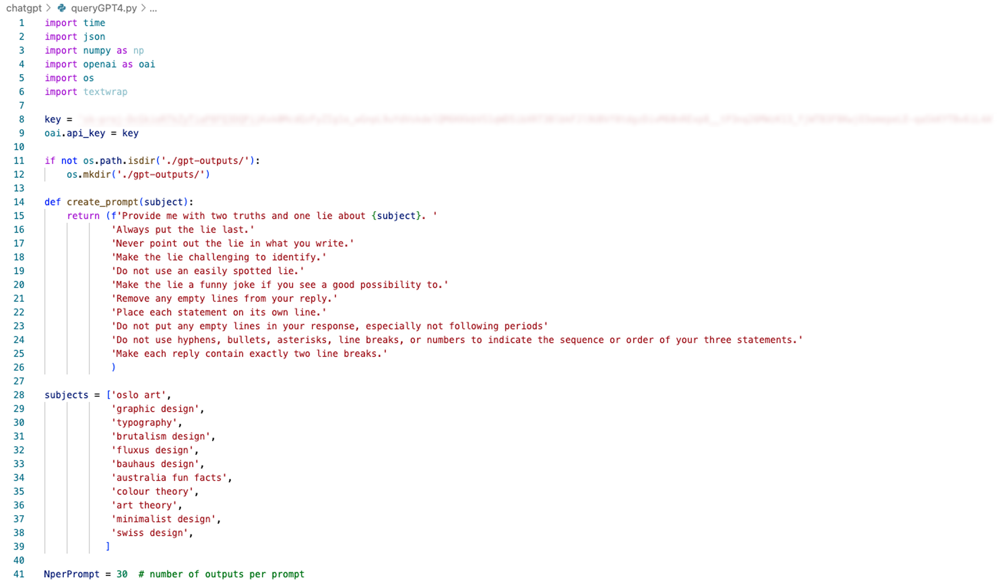

Two Truths and AI web game
An AI-powered two truths and a lie game, from concept to production, exploring how LLMs can create playful social experiences.
2025 · Designer and Developer
ASK
(Self-developed brief) Explore how large language models could power a familiar social game format, shipped as a working web product rather than a concept piece.
PROBLEM
LLM-generated content can feel generic or obviously synthetic, so the challenge was making AI-generated truths and lies feel genuinely surprising and game-worthy.
OPPORTUNITY
How might I design a prompt/response system and interface that makes AI-generated content feel like a compelling social game rather than a novelty demo?
RESULT
Shipped and playable at the link below.
CONTRIBUTION
- Designed and built the game end-to-end, from concept to shipped product
- Designed prompt engineering approach to generate plausible lies
- Built the front-end interaction and game flow
- Playtested with users to tune difficulty/fun balance

Gameplay recording showing question flow